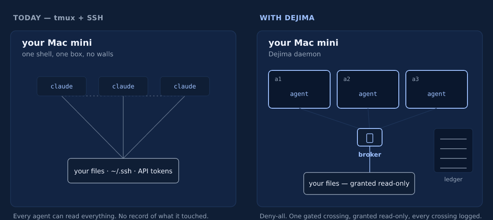

You're still SSHing into tmux to run your agents?
It works. Right up until one of three agents quietly rewrites a file you didn't expect, and you have no way to say which one. Here's where the tmux setup runs out of road, and what to put in its place on the same box.
The setup everyone starts with
You bought a Mac mini, or you have a Linux box in the closet, and you want agents working while you sleep. So you do the obvious thing.
ssh you@mac-mini
tmux new -s claude
# start an agent, detach, ssh back in later to check on itOne pane per agent. You detach, you reconnect from your laptop, you scroll up to see what happened. For one agent on one repo, this is genuinely fine. Don't let anyone tell you otherwise.
The trouble starts when there are three of them.
Where it breaks
Every agent in that setup runs as you, on your box, with your everything. That's the whole problem, and it shows up in five places.
- No isolation. Each agent can read your SSH keys, your
.envfiles, your other repos, and your shell history. One prompt injection or one confused tool call, and the blast radius is your entire machine. tmux draws a box around a terminal, not around what runs inside it. - No audit trail. When something writes to
~/.aws/credentials, you cannot point to which agent did it or when. Scrollback isn't a record. It ages out, and it never covered the file system anyway. - No real fleet view. Three agents means three panes and a window-switching habit. There's no single place that shows what's running, what's stuck, and what's burning tokens.
- Reconnect roulette. Wi-Fi drops, the SSH session dies, and you're guessing whether the detach was clean. Move to a second device and you're hunting for the right session name.
- No clean teardown. When a job is done, "cleanup" is you remembering what it touched. There's no command that removes an agent and everything it created.
None of these are tmux's fault. tmux is a terminal multiplexer doing exactly its job. It was never meant to be the security boundary for an autonomous process with your credentials.

Text version
TODAY — tmux + SSH WITH DEJIMA
your Mac mini your Mac mini
claude claude claude [a1 agent] [a2 agent] [a3 agent] sealed
\ | / \ | /
open reach to: one broker gate
your files · ~/.ssh · tokens your files (read-only) → ledger
Every agent reads everything. Deny-all. One gated crossing,
No record of what it touched. granted read-only, every crossing logged.The fix: same instinct, contained
You don't have to give up the part that works. You still own the hardware, you still reach it over your own network, you still have agents running while you're away. What changes is the box each agent runs in.
Dejima puts every agent in its own container it calls an island. The island can't see your host files. It can't see the other islands. Host access is off by default, and you grant folders one at a time, read-only, through a broker that writes every crossing to a tamper-evident log. Same Mac mini. Walls added.
# on the Mac mini, once
curl -fsSL https://dejima.tech/install.sh | bash
# spin up an island from a repo (it seeds the first agent for you)
dejima init --repo git@github.com:you/web.git
# add a second agent in the same island
dejima agent add web --type codex
# run it: the TUI shows every island and agent in one place
dejimaFrom there you attach with dejima connect web, and the session survives a dropped connection and follows you to a second device. The same install sets up Docker, the background service, and your Tailscale identity, so "set up the infrastructure" isn't a project you do first.
Now walk back through the five failures:
- Isolation: an agent sees its own island and nothing else. Your keys and your other repos aren't reachable from inside it.
- Audit: every brokered file crossing is hash-chained and verifiable with
dejima audit --verify. You can prove what an agent touched, not guess. - Fleet view: the TUI lists every island and agent with status, memory, and logs, and you start, stop, or steer any of them from one screen.
- Sessions: persistent and multi-attach by design. Disconnect, sleep the laptop, pick up on your phone.
- Teardown:
dejima purge webdestroys the island and its volumes. Nothing left behind to find.
The honest version: if you run exactly one agent on one repo and never touch anything sensitive, tmux is fine and you don't need this. The moment you're running a fleet, or the code is under NDA, or you'd have to answer "what did it do," the box matters.
It's the same hardware and the same habit of reaching into your own machine. The agents just stop being able to wander.
Install Dejima and run your first island →
Next: Turn a Mac mini into an AI agent server in 5 minutes · All guides